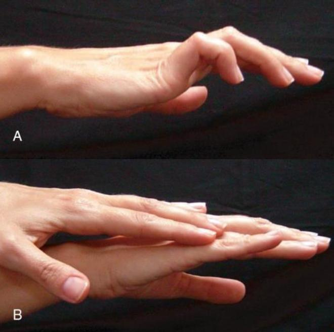

TARO 2024: Paciente masculino, 15 anos, com dor no ombro. Imagem de radiografia a seguir. A principal hipótese diagnóstica é
Osteossarcoma: agressivo e metafisário. Osteoma osteoide: nicho cortical pequeno. TCG: adulto jovem, com a fise fechada.
Para a provalesão lítica epifisária em adolescente com fise aberta: condroblastoma.
Com o nosso cronograma, você faz o maior número de questões possível sem se esgotar. Nós planejamos tudo para você.
Crie sua conta grátis agora mesmo e conheça outras questões.

Semiologia da mão · garra ulnar
Na semiologia da mão, a manobra clínica que corrige a garra ulnar demonstrada na imagem a seguir é descrita por:
Imagem: Motta Filho e Barros Filho, Ortopedia e Traumatologia.
Guarde a sua letra. A resposta toca no próximo story.
TARO 2025 · semiologia da mão
Bloqueie a hiperextensão da MF…
e o extensor passa a estender as interfalângicas.
Positiva: procedimento estático.
Negativa: transferência dinâmica.
Duchenne é a própria garra. Jeanne é do polegar, com a MF hiperestendida na pinça. André-Thomas é a compensação pela flexão do punho.
Com o nosso cronograma, você faz o maior número de questões possível sem se cansar tanto. Nós planejamos tudo para você.
ortoquestoes.com.br